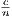

v0.2
Remote Onion Peeling
This document describes a new protocol for anonymous communication over mobile
ad hoc networks (MANETs) that I believe to be a significant improvement over
the existing literature, both in terms of degree of anonymity and latency.
Achieving anonymous communication over MANETs presents a significant challenge,
with threats and constraints that differ dramatically from protocols that work over
copper and fiber. Still, it is useful to illustrate Remote Onion Peeling (ROP) in
contrast with systems like Tor, if only because the reader is probably more familiar
with those systems.
1 Tor
Tor [1] works using layered encryption. When Alice wishes to send a message to Eve,
She first encrypts the message with Devon’s key, then with the Carlos’s key, and
finally with Bob’s key. She then sends the message to Bob, who strips a layer of
encryption and sends it to Carlos. Carlos does the same and sends it to
Devon. When Devon finally receives the message in plaintext, he passes it
along to Eve. If Eve wishes to reply, she replies to Devon, who encrypts her
reply with Ka, Kb, and Kc respectively and sends it back along the circuit.
This works great over the internet but fares poorly over MANETs for the following
reasons:
- GPA. For the global passive adversary, it is easy to trace packets from
source to destination. Tor doesn’t defend against the GPA because to do
so would necessitate cover traffic and the designers didn’t want to make
the bandwidth tradeoff. Unfortunately, for wireless networks, the global
passive adversary is local.
- March Down. Adversary nodes in MANETs can move as they please.
Given enough time, the physical connection between members of a circuit
will break and if an adversary node is well positioned, the new path will
pass through the adversary node. Then, by marching down the physical
path of a circuit, adversary nodes can discover the identity of onion nodes,
and eventually the sender node itself.
- Sybil Attacks. Tor uses directory authorities to verify the existence of
nodes. Because MANETs are decentralized, sybil attacks pose a significant
threat.
- Latency. A protocol for wireless mesh networks can’t just pick any nodes
in the network to be onion partners. If it chooses partners who are on
opposite sides of a thousand node network, latency will be extremely high.
2 Previous approaches in anonymous MANETs
Reactive Routing
Protocols that purport to offer anonymous comms over MANETs overwhelmingly use
reactive routing protocols based on DSR [2] and AODV [3]. They work as follows: the
sender encrypts a route request with the public key of the destination and
floods this request through the network. The destination’s public key is
appended to this request in plaintext. At each intermediate hop, the current
node adds its identifier and a symmetric key to the message, encrypted with
the destination’s public key. When the request arrives at the destination,
he constructs an onion around a route reply using the symmetric keys of
the intermediate nodes, which he then sends back toward the sender. The
sender and destination continue to use this path until it is broken, at which
point the sender constructs a new route request and establishes a new path.
There are many protocols that are slight variants of this design. These include MASK
[4], ANODR [5], SDAR [6], AnonDSR [7], and ASR [8]. A nice review of the
differences between them can be found in [9].
Proactive Routing
There are very few published anonymity schemes that use proactive routing
protocols like OLSR [10]. The Autonomous Overlay System [11] is one. In
AOS, nodes are separated into contiguously connected cliques of about 5-10
nodes each. Intra-clique traffic is exchanged continuously - most of it cover
traffic. When Alice in clique 3 has a real message to send to Eve in clique 14,
she creates a message encrypted with the public key of Devon in clique 11,
then Charlie in clique 10, and finally Bob in clique 2. She also constructs an
onion router data structure, where for each onion layer (analogous to one
hop in Tor but consisting of multiple cliques) there are multiple destination
cliques, but only one clique in the layer has the key to strip the next layer off
of the onion router structure. The clique that does strip a layer off of the
router forwards the message and new router to every clique in the next layer.

As a consequence of all of this, onion decryption can continue past the point at which
the true destination node received the message. This property gives AOS strong
destination anonymity, and the cover traffic gives AOS resistance against the GPA.
However, because cover traffic is intra-clique only and not inter-clique, it is easy to
trace messages back to their source clique, and from there, given enough messages or
infiltration of the clique by adversary nodes, easy to identity the source
node. And even though destination anonymity is good, intersection attacks
can be attempted after observing messages being sent at both ends of the
circuit. An attacker can mount an intersection attack and deduce that two
cliques are communicating with each other - an attack made easier if the
network has little non-cover traffic. Once an attacker has discovered two cliques
communicating, it is only a matter of deploying some adversary nodes to
determine which members of the cliques are the source and destination nodes.
Proactive vs. Reactive
Why have reactive protocols been favored so heavily in the literature? To understand
this, we need to examine the assumptions that underly the choices made by protocol
designers. Consider a MANET where all of the nodes are static and imagine that all
source nodes and destination nodes in the network have exchanged keys previously,
out of band. For this flavor of MANET, a reactive protocol is a great choice. Sender
nodes can emit route requests without having to worry about including sybil nodes or
their routes breaking due to node mobility or exchanging keys over the network.
But what if there are high levels of node mobility? Circuits will be oft-broken, and
each reformation will cost a flooding of the whole network with a new route request.
0 circuits broken since you loaded this page.
Each circuit break represents a flooding of the network to establish a new circuit [12].
This frequent flooding can quickly lead to congestion.
3 Building a Better Proactive Protocol
Consider a Tor-like protocol for MANETs where an initiator constructs a circuit by
telescoping Diffie-Helman handshakes (this is the method that Tor uses for circuit
construction). There is proper pairwise cover traffic between each contiguous
connection, into which real messages are embedded. Assuming a well formed network
with minimal sybil nodes, this simple protocol is actually fairly successful. We
achieve protection against the GPA, and reasonable protection against internal
attackers while the topography of the network doesn’t change. Once presented with
node mobility, however, our simple protocol becomes vulnerable to the march
down attack described in section 1. The only way to defend against the
march down attack is to rotate circuits frequently so that they disappear
before adversary nodes can physically trace them back. Unfortunately, this
exposes the protocol to the predecessor attack [13], which works as follows:
In order for an attacker to perform end to end correlation on a circuit, they must
control both the first and last nodes of said circuit. Controlling the exit node lets an
attacker associate a message with a specific session, and attackers earlier on the
circuit can use timing attacks to verify that they are on the same circuit as the exit
node. The odds of collaborating attackers being both the entry and exit nodes on a
circuit are (c∕n)2, where c is the number of compromised nodes in the network and n
is the total number of nodes. If there are many nodes in the network and only
a few compromised nodes, (c∕n)2 will be small. However, given repeated
circuit switching (circuits are rotated every 10 minutes in Tor to ensure
unlinkability) the chance of a circuit being compromised increases gradually
toward 1. To prevents this, Tor selects a node to be a given user’s guard
node, which is the first node of every circuit they construct. There is still an
n/c chance that the guard node is compromised, but that chance does not
increase with each new circuit construction. Unfortunately, guard nodes won’t
work well over a wireless medium because of the march down problem and
increasing latency as the guard node drifts away from the source in the network.
But what if we could rotate circuits frequently without revealing who the
immediate predecessor node was, and still have a way to return messages to the
sender?
4 Remote Onion Peeling
ROP takes ideas from the overlay networks we’ve discussed so far, as well as from
cryptographic ratchets like OTR [14] and Axolotl [15]. The core idea is to have onion
stripping take place at remote nodes rather than at actual onion nodes.
The sender chooses five partner nodes (P1…P5) and exchanges keys with each
(K1…K5). These keys are analogous to chain keys in the Axolotl ratchet.
For each turn of the ratchet, the partner nodes will derive a remote node
(N1…N5) and a message key (MK1…MK5). Each node will then send its message
key to its remote node, encrypted with the public key of the remote node.
Every time we ratchet forward, the keys that the sender shares with each of the
partner nodes (K1…K5) are hashed and new keys derived. It is important to
remember that the keys possessed by the partner nodes are shared by the sender, so
the sender knows all of the message keys as well as all of the remote nodes at all
times.
When a user has a message to send, she constructs an onion router:
{N2{N3{N4{N5{Ns}MK5}MK4}MK3}MK2}MK1
where Ns is the address of the source node and N3 is the address of the exit node. She
also encrypts her message in layers as follows:
Both the message and the onion router are sent to N1. There, N1, having already
received MK1 from the first partner node, strips a layer of encryption from
the message and from the onion router, revealing the address of N2. The
same happens at N2, and finally the message arrives at N3, where the third
layer of encryption is stripped from the message, revealing the plaintext. At
this point, because N3 is the exit node, it sends the data to its destination,
be it another node in the MANET or a server somewhere on the internet.
When N3 receives a response, it needs to forward it back to the sender node. But
because N3 doesn’t know where Ns is, and because it doesn’t even know where its
immediate predecessor N2 is, the only way forward is to send the message along
the path specified by the onion router data structure. So N3 uses MK3
to strip another layer from the onion router, revealing the location of N4.
There is trouble in having N3 construct a new onion around the reply. Which keys
should N3 use? In most cases, a compromised N3 leads to severe loss of anonymity.
A different approach is needed for the return journey. Onion routing derives its
anonymity properties from the fact that messages change their appearance at
each hop on the route. It is possible to achieve this same effect by adding
rather than stripping layers of encryption from messages. This normally isn’t
possible because the node at the end of the chain doesn’t have all of the keys.
However, in this protocol, Ns shares all message keys with all remote nodes.
When N3 receives a reply, he encrypts it with MK3 and forwards it along to
N4. N4 strips a layer from the onion router data structure with MK4, and
adds a layer of encryption (with MK4) to the reply. N5 does the same with
MK5, and sends the onion router and reply on to Ns. Because Ns shares all
of the message keys, she can easily strip off all of the layers, revealing the
plaintext.
4.1 GPA Protection
There is link encryption between all pairs of contiguously connected nodes in the
network. Upon establishing a connection, node A initiates a Diffie-Helman handshake
with node B and the two construct a shared key. Encryption between every hop on a
path causes a message passing through the network to look different at every hop to
an external observer. Of course, this doesn’t prevent said observer from using timing
to trace messages through the network. To prevent this, we need cover traffic. There
is a constant stream of cover traffic that passes between pairs of contiguously
connected nodes at rate R. Real packets are embedded into this stream, at a rate
not to exceed R. Because real packets are padded to be the same length as
cover traffic packets, an external observer can’t distinguish between the two.
As this is a protocol designed for mobile devices, with real power and bandwidth
constraints, it is probably a good idea for implementations to include a network-wide
option that disables cover traffic if the threat model doesn’t include an adversary
who is capable of eavesdropping on the entire network and inferring node location
based on signal strength.
4.2 Partner and Remote Node Selection
When a network becomes big enough, selecting partner (and remote) nodes that are
close by is important in order to to minimize latency, which can quickly render the
network unusable. A simple approach to this problem would be to choose nodes that
are within a certain topographical radius around the sender. The problem with this
is that compromised partner nodes can simply look to the center of this
circle to find the sender node. Instead, we partition the network into zones,
with zone size being a tunable parameter (bigger = better anonymity and
more latency). We use a distributed graph partitioning algorithm [16][17] to
build the zones, from which each sender node samples to choose partner and
remote nodes. Whenever partner nodes grow apart by two zones or more, the
sender replaces that partner node by choosing a new partner in its current
zone.
5 Anonymity Analysis
In assessing the anonymity properties of ROP, it is important to distinguish between
paths and anonymity circuits. A path is the set of all nodes that a message passes
through on its way from source to destination. A circuit consists of the sender and
the onion nodes, where layers of encryption are stripped off of messages that pass
through them. One might think of the members of a circuit as the onion routers in
Tor and the members of a path as the underlying routing hops that messages
traverse.
With that in mind, let us consider how ROP fares against the predecessor attack. In
a more traditional MANET onion routing protocol, if an adversary were
to compromise the first and last members of a circuit, it would know the
location of the sender. However, because in ROP there is a chain of proxies
in between the sender and the first member of the circuit, and no return
address, identifying the sender is more difficult. An adversary needs to be the
first node on the path (not the circuit), conduct a timing attack [18], and
also control the exit node. This is important because if an attacker has two
chances with every circuit formation to conduct the predecessor attack,
their odds of discovering the sender go up dramatically. If 25% of nodes in a
network are adversaries, and we assume that they already control the exit
node of a circuit, their chances of being in position to discover the sender
every round is 1 - (1 -)2. If is .25, the attacker will have 44% chance of
compromising the circuit each round rather than a 25% chance under ROP.
An extension to ROP that can help mitigate the predecessor attack even more is to
attempt to use the same exit node for every circuit that a sender node constructs
[19]. This fixed exit node serves the same purpose as guard nodes in Tor, but isn’t
rendered useless by march down and node mobility. If a sender selects a guard node
that is contiguously connected to it, eventually node mobility will separate them and
attacker nodes will be able to position themselves in between. This isn’t the case for
exit nodes, as only exit node can see the plaintext before they send it along. The
downsides to this are latency increases as exit nodes drift in the network and
increased linkability.
6 Sybil Attacks
Anonymity protocols over MANETs that use proactive routing are quite vulnerable
to sybil attacks [20]. If attackers can present false nodes to senders choosing routes,
than they dramatically increase their chances of deanonymizing users. There are a
number of techniques that have been developed to combat sybil attacks in MANETs
[21], including defenses that are unique to MANETs and not available to
peer to peer networks that operate over different network substrates [22]. It
is out of the scope of this work to present a sybil-hardened scheme, but
a network that incorporates a web of trust, social network analysis (this
could also be distributed), and RSSI verification would mitigate serious
attacks.
7 Conclusion
ROP constitutes what I believe to be an improvement in routing protocol for
anonymity in mobile ad hoc networks. In contrast with existing protocols,
ROP offers better anonymity and much better efficiency in the face of node
mobility.
References
[1] R. Dingledine, N. Mathewson, P. Syverson, Tor: The Second-generation
Onion Router. Proceedings of the 13th Conference on USENIX Security
Symposium - Volume 13 1–21, 2004.
[2] D. Johnson,Y. Hu, D. Maltz, ”The Dynamic Source Routing Protocol
(DSR) for Mobile Ad Hoc Networks for IPv4”, RFC 4728, February 2007.
[3] C. Perkins, E. Belding-Royer, S. Das, ”Ad hoc On-Demand Distance
Vector (AODV) Routing”, RFC 3561, July 2003.
[4] Yanchao Zhang; Wei Liu; Wenjing Lou; Yuguang Fang, MASK:
anonymous on-demand routing in mobile ad hoc networks, IEEE
Transactions on Wireless Communications, vol. 5, no. 9, pp.2376-2385,
September 2006.
[5] Jiejun Kong and Xiaoyan Hong, ANODR: ANonymous On Demand
Routing with Untraceable Routes for Mobile Ad-hoc Networks. 2003.
[6] Boukerche, A.; El-Khatib, K.; Li Xu; Korba, L., SDAR: a secure
distributed anonymous routing protocol for wireless and mobile ad hoc
networks, 29th Annual IEEE International Conference on Computer
Networks, 2004, pp.618-624, November 2004.
[7] Ronggong Song, Larry Korba, and George Yee. AnonDSR: efficient
anonymous dynamic source routing for mobile ad-hoc networks. In
Proceedings of the 3rd ACM workshop on Security of ad hoc and sensor
networks (SASN ’05). ACM, New York, NY, USA, 33-42. 2005.
[8] Heesook Choi, William Enck, Jaesheung Shin, Patrick D. Mcdaniel, and
Thomas F. Porta. ASR: anonymous and secure reporting of traffic forwarding
activity in mobile ad hoc networks. Wireless Networking 15, 4. May 2009.
[9] M. Rogers. Private and Censorship-Resistant Communication over
Public Networks. 2010.
[10] T. Clausen, P. Jacquet, ”Optimized Link State Routing Protocol”, RFC
3626, October 2003.
[11] Rui Zhang, Yanchao Zhang, and Yuguang Fang. 2011. AOS: an
anonymous overlay system for mobile ad hoc networks. Wireless Networking.
17, 4 (May 2011)
[12] To be fair, ANODR is a stateless protocol while ROP is stateful and
assumes that each node has semi-perfect knowledge of the network. However,
a stateful version of ANODR, despite being more efficient at route repair,
would still suffer from the same problems that plague stateless ANODR.
[13] Matthew K. Wright, Micah Adler, Brian Neil Levine, and Clay Shields.
2004. The predecessor attack: An analysis of a threat to anonymous
communications systems. ACM Trans. Inf. Syst. Secur. 7, 4 (November
2004)
[14] Nikita Borisov, Ian Goldberg, and Eric Brewer. 2004. Off-the-record
Communication, or, Why Not to Use PGP. In Proceedings of the ACM
workshop on Privacy in the Electronic Society WPES ’04. ACM, New York,
2004.
[15] Open Whisper Systems Blog. Advanced Ratcheting.
https://whispersystems.org/blog/advanced-ratcheting/
[16] F. Rahimian, A.H. Payberah, S.Girdzijauskas M. Jelasity, S.
Haridi, ”JA-BE-JA: A Distributed Algorithm for Balanced Graph
Partitioning,” 2013 IEEE 7th International Conference on Self-Adaptive and
Self-Organizing Systems (SASO), Sept. 2013
[17] I am not sure of the consequences of including semi-trusted nodes in
distributed graph partitioning protocols. I assume that it is a surmountable
problem, and even if it isn’t, there are other ways to accomplish partner
node selection without compromising latency and anonymity. For example, a
sender node can generate a contiguous sample of approved nodes that aren’t
centered on the sender and are irregularly shaped.
[18] Tor Blog. One Cell is Enough.
https://blog.torproject.org/blog/one-cell-enough
[19] M. Wright, M. Adler, B. N. Levine, C. Shields, ”Defending anonymous
communications against passive logging attacks,” 2003 Symposium on
Security and Privacy, 2003. pp.28, 41, 11-14. May 2003.
[20] James Newsome, Elaine Shi, Dawn Song, and Adrian Perrig. The Sybil
Attack in Sensor Networks: Analysis & Defenses. Proceedings of the 3rd
International Symposium on Information Processing in Sensor Networks
(IPSN ’04). New York, NY, USA. 2004.
[21] Haifeng Yu, Michael Kaminsky, Phillip B. Gibbons, and Abraham
Flaxman. SybilGuard: defending against sybil attacks via social networks.
SIGCOMM Comput. Commun. Rev. 36, 267-278. August 2006.
[22] M. Demirbas, Youngwhan Song, ”An RSSI-based scheme for sybil
attack detection in wireless sensor networks,” International Symposium on
a World of Wireless, Mobile and Multimedia Networks, 2006.